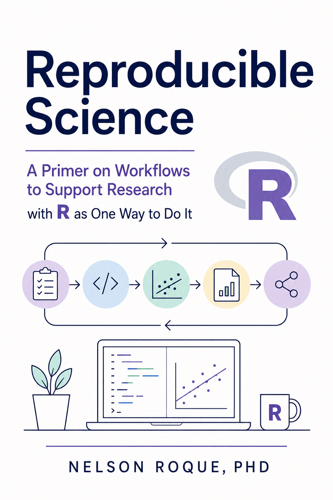

Home
A practical, open course for building trustworthy research workflows

An open Context Lab course
Make your research easier to trust.
Learn a practical, code-first approach to reproducible data science—from organizing a project to wrangling messy data, working with APIs, mining text, and building models.
What you will learn
By the end of the course, you will be able to:
- explain why reproducibility matters and apply the FAIR principles;
- organize research as a durable, code-based workflow;
- import, inspect, reshape, join, and visualize real-world data;
- work with dates, survey exports, text, JSON, and public APIs; and
- move from exploratory analysis toward regression and multilevel models.
Course map
Choose a module or follow the course in order. Each lesson includes focused explanations and code you can adapt to your own work.
Why reproducibility?
Build the mental model: reproducibility, replication, FAIR principles, and the tools that support open science.
Stage 02 · Working in RBuild a dependable workflow
Learn R syntax, file operations, project anatomy, and the date-handling patterns that appear in everyday research.
Stage 03 · Wrangling & analysisTurn messy data into evidence
Practice with surveys, large datasets, text, JSON, APIs, visualization, regression, and multilevel models.
Stage 04 · Keep learningContinue beyond the course
Use the curated resources, workshop materials, and recordings to deepen your practice.
A suggested learning path
- Understand the standard.Start with reproducibility and the FAIR principles.
- Set up the workflow.Learn the tools, R foundations, and project structure.
- Practice on varied data.Move through survey, time-series, text, JSON, and API examples.
- Analyze and communicate.Build models, create production-ready outputs, and document your decisions.
You can read the lessons without installing anything. To run the examples, clone the repository, open the R project, and work through the chapters in order. Use the search button or press / whenever you need to find a topic quickly.
About the course
This open course was created by Nelson Roque, PhD, Director of the Context Lab at the University of Central Florida. It is designed to give the next generation of scientists a more confident start with reproducible, code-based research.